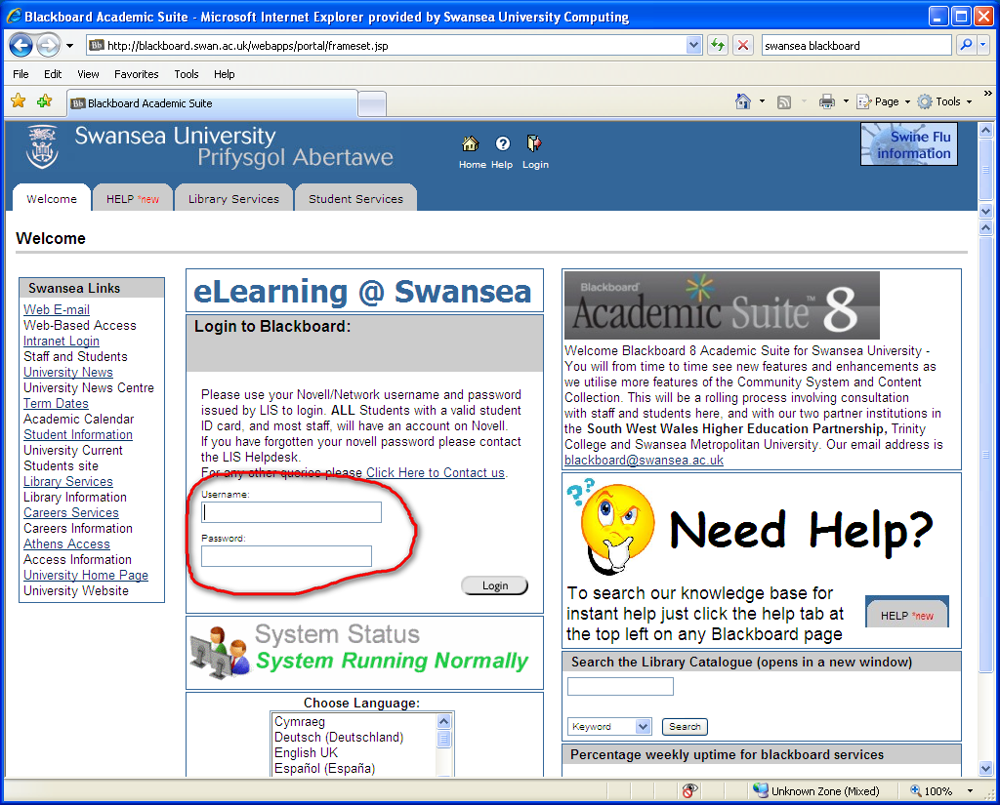
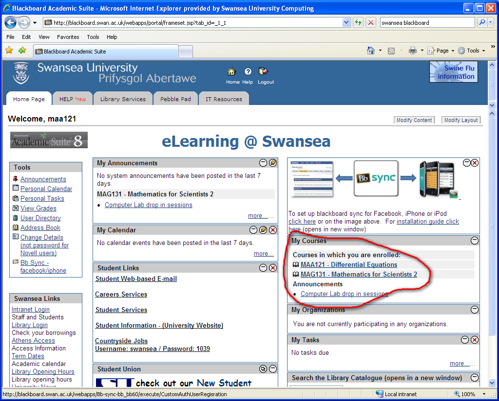
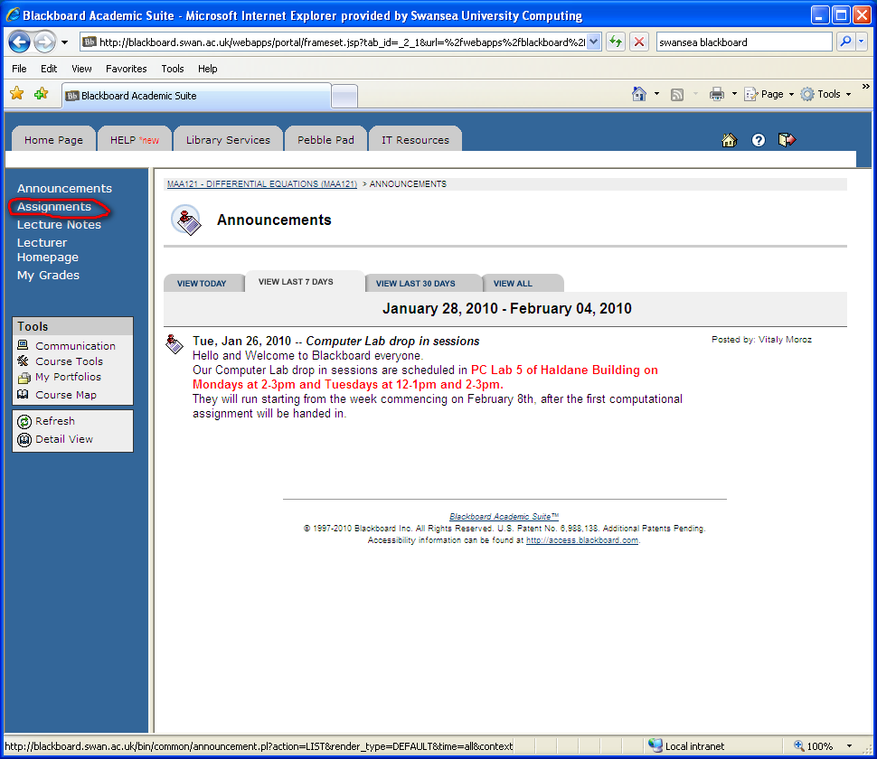
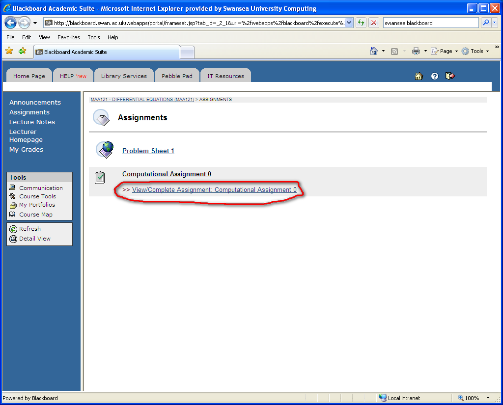
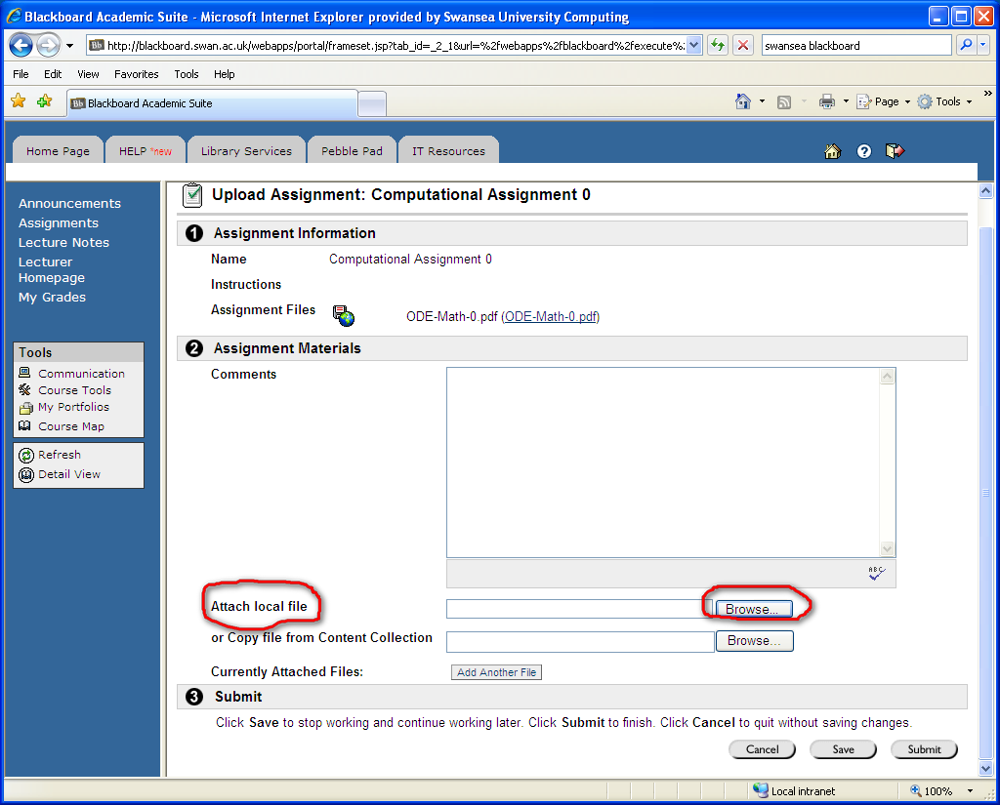
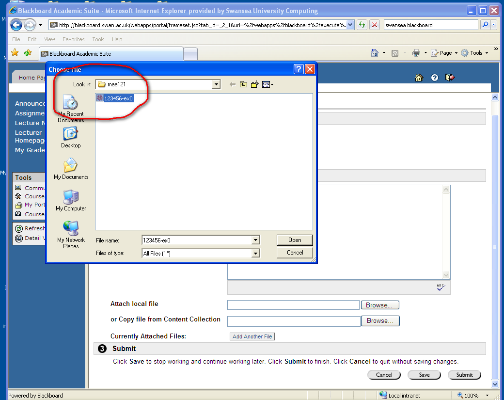
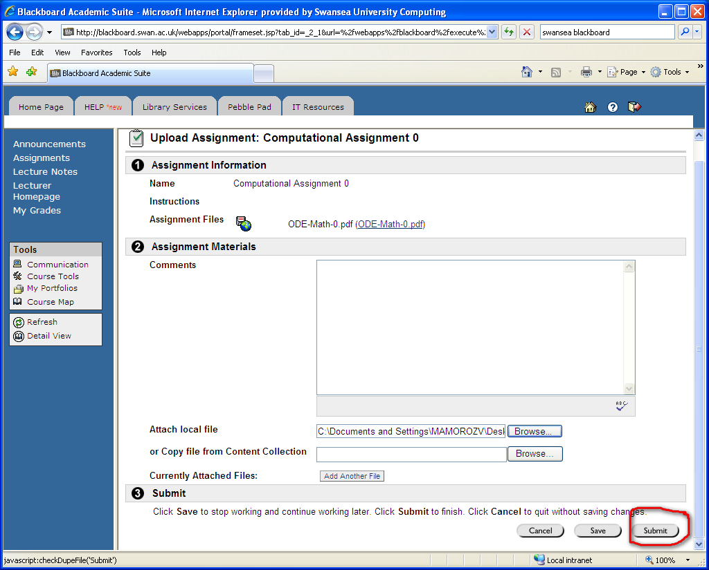
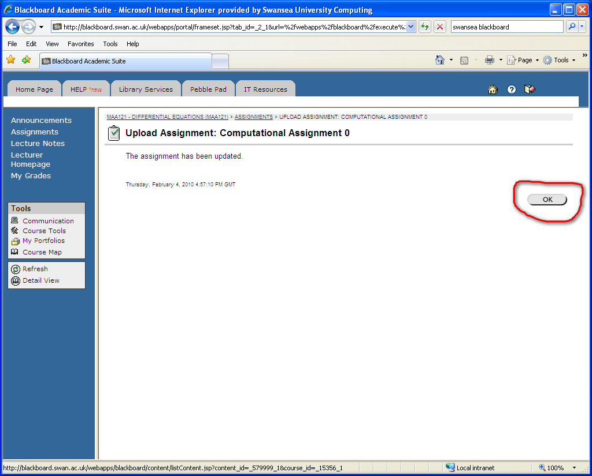

How to submit your Computational Assignments via Blackboard
1. Login into Blackboard at http://blackboard.swan.ac.uk

2. Under My Courses on the right, go to MAA121 or to MAG131, whichever is your correct module code:

3. Go to Assignments tab in the menu on the left.

4. Choose the correct assignment, in this case this is Computational Assignment 0.

4. You will see the upload screen which contains the original Assignment Files (in this case ODE-Math0.pdf) and Attach local file tab.

5. Attach Mathematica notebook with containing your assignment from your local computer.
You can add some comments in the Comments area but do this only if absolutely necessary.

6. After you attached the file click Submit button in the bottom right corner.

Click OK in the confirnmation screen.

This is it!